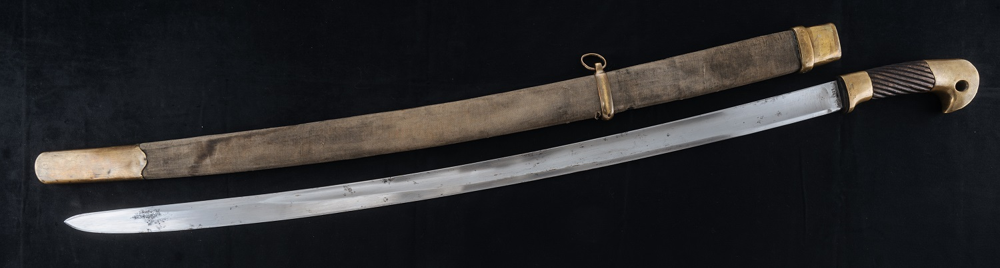

Реформы Петра I и становление империи
Петр I (1672-1725) провел масштабные реформы, которые превратили Россию в одну из ведущих европейских держав. Северная война (1700-1721) со Швецией завершилась победой России и получением выхода к Балтийскому морю. В 1703 году был основан Санкт-Петербург, который стал новой столицей империи.
В 1721 году Петр I принял титул императора, и Россия была провозглашена империей. Реформы Петра затронули все сферы жизни: армию, флот, государственное управление, образование, культуру. Была создана регулярная армия, построен военный флот, введена новая система государственного управления с коллегиями и Сенатом.
Период правления Екатерины II (1762-1796) стал "золотым веком" Российской империи. Императрица продолжила политику европеизации, провела административную реформу, расширила границы империи. В этот период Россия стала одной из крупнейших мировых держав, а русская культура достигла небывалого расцвета.
Имперский триколор - символ величия России
Имперский флаг России состоял из трех горизонтальных полос: черной, белой и желтой. Этот флаг был официальным государственным флагом Российской империи с 1858 по 1883 год. Цвета флага символизировали мощь, благородство и богатство империи.
- Черный цвет - мощь и величие империи
- Белый цвет - благородство и чистота помыслов
- Желтый цвет - богатство и процветание
- Символ единства империи от Балтики до Тихого океана
Вооружение Российской империи
Российская империя славилась своей мощной армией и современным вооружением. Одним из символов русской военной мощи была шашка — традиционное холодное оружие, которое использовалось в русской армии, особенно в казачьих войсках. Шашка стала неотъемлемой частью военной культуры Российской империи и использовалась в многочисленных войнах XIX века.
Историческая шашка
Шашка с ножнами, изготовленная в начале XX века. Характерные элементы: изогнутый клинок, дол, латунные элементы ножен.
Демонстрация оружия
Аудио материалы
Исторические аудио материалы о Российской империи.
Шашка была стандартным холодным оружием в русской армии, особенно широко использовалась в кавалерии и казачьих частях. Её конструкция была оптимизирована для рубящих ударов, что делало её эффективным оружием в ближнем бою. Многие шашки того периода были изготовлены на Златоустовской оружейной фабрике, которая славилась качеством своего оружия.
Ключевые события
Нажмите на события для получения дополнительной информации
Северная война
Война России со Швецией за выход к Балтийскому морю
1700-1721 гг.Основание Санкт-Петербурга
Заложение новой столицы Российской империи
1703 г.Провозглашение империи
Петр I принял титул императора
1721 г.Правление Екатерины II
"Золотой век" Российской империи
1762-1796Отечественная война 1812
Война с Наполеоном, изгнание французской армии
1812 г.Отмена крепостного права
Великая реформа Александра II
1861 г.Первая русская революция
Революционные события, создание Государственной думы
1905-1907Первая мировая война
Участие России в мировой войне, революционные события 1917 года
1914-1918Хронология правителей Российской империи
Таблица основных правителей Российской империи с указанием периода правления и ключевых достижений.
| Правитель | Годы правления | Титул | Основные достижения |
|---|---|---|---|
| Петр I | 1682-1725 | Император | Реформы, основание Санкт-Петербурга, Северная война, провозглашение империи |
| Екатерина I | 1725-1727 | Императрица | Продолжение политики Петра I, создание Верховного тайного совета |
| Петр II | 1727-1730 | Император | Короткое правление, возвращение столицы в Москву |
| Анна Иоанновна | 1730-1740 | Императрица | Бироновщина, русско-турецкая война 1735-1739 |
| Елизавета Петровна | 1741-1761 | Императрица | Семилетняя война, развитие культуры и образования |
| Петр III | 1761-1762 | Император | Манифест о вольности дворянства, мир с Пруссией |
| Екатерина II | 1762-1796 | Императрица | "Золотой век", расширение границ, административная реформа, расцвет культуры |
| Павел I | 1796-1801 | Император | Указ о престолонаследии, ограничение дворянских привилегий |
| Александр I | 1801-1825 | Император | Отечественная война 1812, создание Священного союза, либеральные реформы |
| Николай I | 1825-1855 | Император | Кодификация законов, Крымская война, укрепление самодержавия |
| Александр II | 1855-1881 | Император | Отмена крепостного права, судебная реформа, военная реформа |
| Александр III | 1881-1894 | Император | Контрреформы, укрепление самодержавия, экономический подъем |
| Николай II | 1894-1917 | Император | Русско-японская война, революция 1905-1907, Первая мировая война, отречение |
Статистика ключевых событий Российской империи
Количественная статистика важнейших событий и достижений периода Российской империи.
| Категория события | Количество | Период | Описание |
|---|---|---|---|
| Войны | 15 | 1721-1917 | Крупные военные конфликты с участием России |
| Реформы | 12 | 1721-1917 | Масштабные государственные преобразования |
| Территориальные приобретения | 8 | 1721-1917 | Значительные расширения границ империи |
| Основанные города | 25+ | 1703-1917 | Новые города, включая Санкт-Петербург |
| Университеты | 12 | 1755-1917 | Высшие учебные заведения, основанные в империи |
| Революции | 3 | 1825-1917 | Восстания и революционные движения |
| Отмененные законы | 5 | 1861-1917 | Крупные правовые изменения (крепостное право и др.) |
| Династические браки | 18 | 1721-1917 | Браки членов императорской семьи с европейскими монархами |
| Культурные достижения | 50+ | 1721-1917 | Произведения искусства, литературы, музыки мирового значения |
| Научные открытия | 30+ | 1721-1917 | Важнейшие научные достижения российских ученых |
Галерея исторических личностей
Нажмите на изображение для просмотра в полном размере


Выдающиеся исторические личности
Петр I
1672-1725
Первый российский император, провел масштабные реформы, основал Санкт-Петербург.
Читать полностью
Екатерина II
1729-1796
Императрица России, "золотой век" империи, расширение границ и расцвет культуры.
Читать полностью
Александр II
1818-1881
Царь-освободитель, отменил крепостное право, провел либеральные реформы.
Читать полностью
Николай II
1868-1918
Последний российский император, отрекся от престола в 1917 году.
Читать полностью